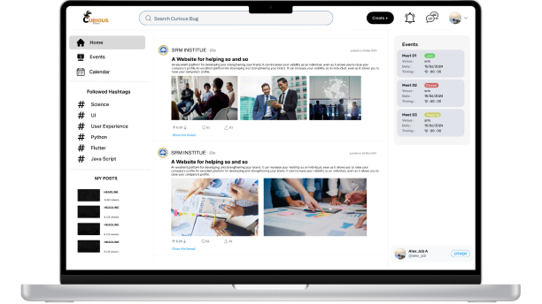

Curious Bees
A platform exclusive to SRM University students where they connect, collaborate on projects, and publish
papers, promoting academic community and knowledge sharing.
Project type: End-to-end responsive website
Role: UX/UI designer
Project Status : Ongoing
Software and tools : Figma

The Problem
Problem with Teamwork and Tracking Research at SRM University
Finding teammates is hard: Researchers can't easily find other researchers who have the skills they need to work on their
projects together.
Tracking research is messy:
The university doesn't have a good system for keeping track of how many projects researchers are
finishing or how many papers they're publishing.
Talking to each other is difficult: Researchers don't have a good way to connect with each other and share what they're working
on, which makes it hard to find people to help with their projects. This is especially true for
projects that need people with different backgrounds.
Because SRM is such a big university, these problems are even worse. Researchers are spread out in
different departments, so it's even harder for them to find the right people to work with. This
can slow down research and make it harder for researchers to come up with new ideas.
How is the problem currently being addressed?
the development of a new platform specifically designed to address the current challenges researchers
face in finding collaborators, tracking research activity, and fostering communication.
Here's
a breakdown of how this platform tackles these issues:
Connecting Researchers: The platform will provide a central hub for researchers to showcase their expertise and pitch their
research ideas. This will allow for easy discovery of potential collaborators with complementary skills,
facilitating team formation.
Enhanced Visibility: By centralizing research activity on the platform, we aim to gain a clearer picture of ongoing projects
and publications at SRM. This transparency will not only benefit researchers seeking collaborators but
also provide valuable insights for the university as a whole.
Building a Collaborative Network: We're integrating features that encourage communication and collaboration among researchers. This
could include discussion forums, project management tools, and functionalities to directly connect with
relevant faculty members.
We believe this platform will be a game-changer for research at SRM University. It will empower
researchers to connect seamlessly, streamline research processes, and ultimately propel the university
towards achieving even greater research success.
Expected outcomes
Dream Teams Made Easy: Researchers will find collaborators faster, forming stronger research teams.
Smoother
Sailing, Faster Finish: Collaboration tools and progress tracking will streamline research and lead to more
projects reaching the finish line.
Sharing is Caring, Publishing is Booming: Researchers will connect
and share ideas, potentially leading to more published research papers.
Research on Rocket Fuel:
Overall research productivity will soar, boosting SRM's reputation and attracting top talent.
How do we organize the
information on our website?
I wanted to better understand our user’s mental model to inform how the product's information
architecture should be. I want the users to be able to find the information they are looking for where they
think the information should be.
What I learn form this project.
Design Principles: I learned how to apply design principles to create a user-friendly interface (e.g.,
using hierarchy to prioritize information and white space to improve readability).
Figma Tools:
I mastered using Figma's prototyping features to effectively communicate user interactions and user
flows within my design.
User Psychology: By considering the concept of cognitive load, I was
able to design a more intuitive experience by minimizing complexity and presenting information in a clear
and concise manner.
User Experience (UX): This project broadened my understanding of UX
principles, allowing me to design an interface that not only looks good but also caters to the user's
needs and expectations throughout their interaction.
Thank you for your interest in my work. Let’s connect!
Made with a strong cup of coffee. © 2024 Alex Job